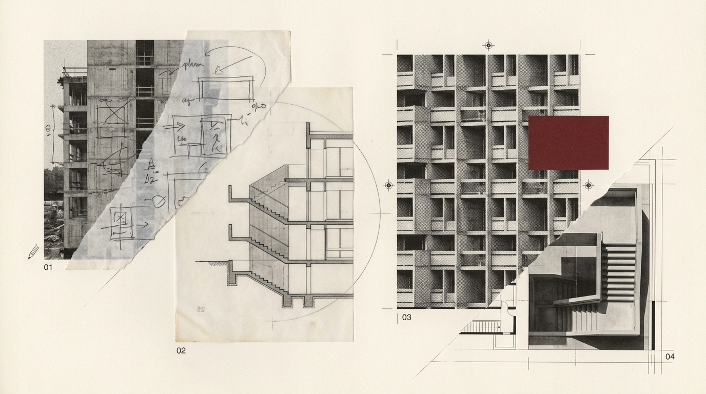
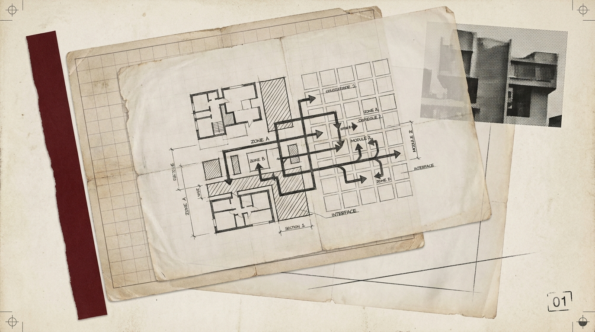
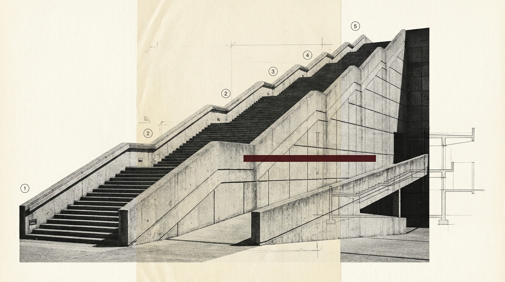
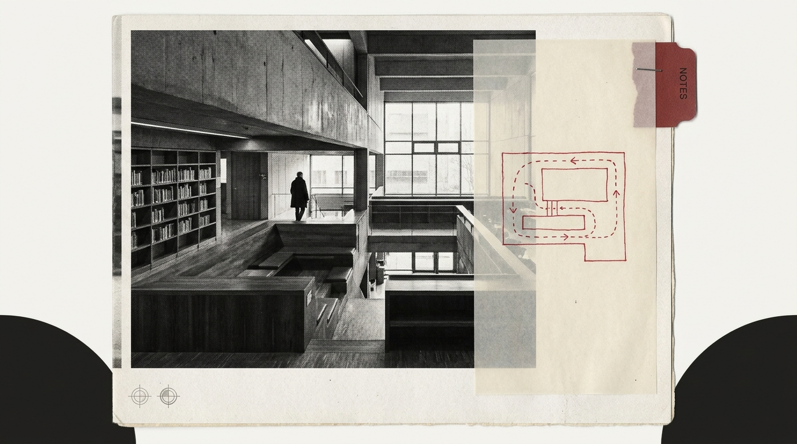
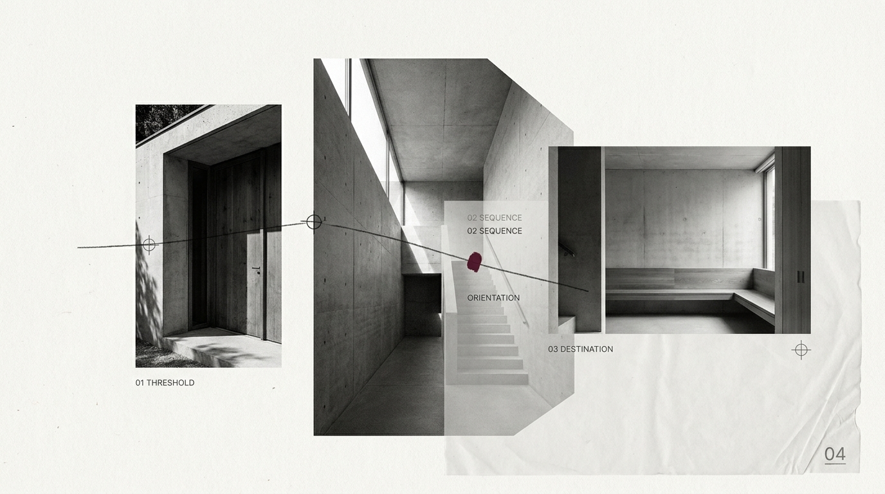
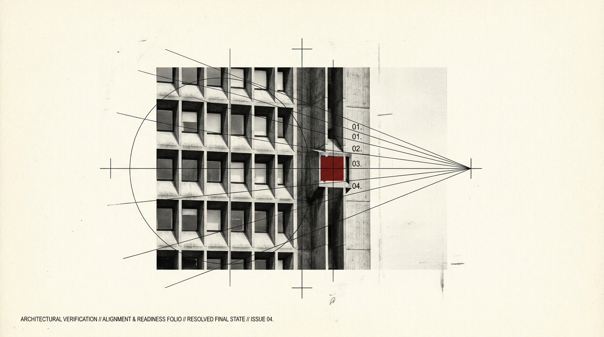

EXTRACT.
01
Find the method underneath the work.
We map the result, recurring decisions, existing IP, proof, client journey, and source material worth preserving.
PROGRAM BLUEPRINTFor established coaches + consultants
You already know how to create the result one-to-one. I turn that proven method into one coherent paid program: offer, curriculum, member experience, enrollment, and launch-ready implementation.
01 / THE TRANSLATION PROBLEM
Your expertise lives in client calls, frameworks, documents, workshops, videos, notes, and decisions you make almost automatically.
That does not automatically become a good program. The work is deciding what the product is, what belongs inside it, what stays live, what gets taught, what gets cut, and how somebody actually moves through the transformation.
02 / THE REFRAME
The software can hold the content.
Your method determines the product.
Platform-first: choose software → make modules → upload content → try to make it feel coherent.
Method-first: proven result → program architecture → learning journey → member experience → enrollment → platform.
03 / THE FUTURE STATE
By the end of the engagement, the expertise is no longer scattered across calls, notes, content, and instinct. It becomes one coherent signature program with a deliberate learning journey, functioning member environment, clean enrollment path, and onboarding that continues what was promised before purchase.
The goal is not more content. The goal is a product that makes the expertise understandable, navigable, and deliverable beyond one person at a time.
04 / METHOD → PROGRAM
The internal work is deep. The client-facing system stays simple: extract what works, architect the transformation, build the environment, then connect the sale to the experience.

We map the result, recurring decisions, existing IP, proof, client journey, and source material worth preserving.
PROGRAM BLUEPRINTWe define the buyer, promise, milestones, curriculum, actions, feedback points, support model, and what actually belongs in the product.
LEARNING ARCHITECTUREClassroom structure, navigation, resources, visual system, permissions, onboarding, and the agreed program experience are implemented around the approved plan.
MEMBER ENVIRONMENTEnrollment, checkout, confirmation, onboarding, first action, and launch-readiness QA are connected to the same product logic.
ENROLLMENT + ACTIVATION05 / JESUS|U / AWAKEN TO JESUS
Jesus|U is the closest direct proof for this work: buyer-facing offer presentation on one side, structured member-facing delivery on the other.


Course/classroom architecture, lesson structure, backend setup, membership presentation, platform organization, visual systems, and broader digital implementation.
This demonstrates relevant zero-to-one capability and system thinking. No revenue, conversion, retention, or completion claim is implied.
06 / THE ALTERNATIVES
Best when you already know exactly what the product should be and have the time to make every strategic and technical decision yourself.
Best when the offer, curriculum, learning experience, onboarding, and enrollment path are already solved and you simply need implementation.
Best when the method works, but the product version still needs to be extracted, designed, structured, connected, and built.
You are not paying extra because the buttons are difficult. You are paying to solve the decisions that come before the buttons.
One buyer. One transformation. One signature program. One platform. One enrollment path. The constraint is deliberate.

Buyer, transformation, method, format, milestones, boundaries, member journey, and the decisions that stop the build from becoming a content dump.

Curriculum, modules, lessons, actions, resources, feedback, progression, and where live interaction or community actually improves the result.

Platform structure, classroom, navigation, resources, visual system, access, permissions, and community architecture where relevant.

Enrollment page, checkout connection, confirmation, welcome, Start Here, and the essential onboarding path into the product.

Journey testing, access QA, mobile review, links and resources, launch-readiness checklist, final agreed-scope corrections, and operating handoff.
07 / THE PROJECT EXPERIENCE
Four weeks is the working production model for a standard-scope project when client inputs and approvals are ready. Scope or client delays can change the calendar.
Pull the methodology apart, identify what creates the result, and establish the Program Blueprint.
Turn the transformation into a structured curriculum and member journey.
Turn the approved architecture into the actual member environment.
Enrollment, onboarding, integrations, QA, and handoff.
08 / FIT
This is not an idea-validation package disguised as implementation. It works best when the expertise is real and the decision to build is already moving.
You have helped actual clients or customers achieve the kind of transformation the program will teach.
A process, framework, body of knowledge, or repeatable way of working exists beneath the service.
Existing clients, referrals, audience, email, partnerships, outbound, or another credible path to prospective customers.
A genuine launch or relaunch is in motion, typically inside the next 30–90 days.
09 / INVESTMENT
Program Architecture + Build starts at
That is the starting investment for the full architecture + implementation engagement. If the strategy and program structure are already solved, a narrower implementation scope can be quoted separately.
Typical production plan: approximately four weeks when client inputs and approvals are ready. Scope or client delays can change the calendar. No revenue or enrollment guarantee is implied.
Start the conversationYou need a credible route to buyers: existing clients, referrals, an audience, a list, partnerships, outbound, or another real channel. This engagement does not manufacture market demand.
No. I architect the product around your expertise and organize the agreed material into the program. You remain the subject-matter source and provide or create the core teaching assets.
Platform choice follows the product. My strongest current done-for-you implementation experience is on Skool. Other platforms are scoped only when implementation capability and fit are confirmed.
No. Demand, pricing, distribution, sales execution, member effort, and other factors sit outside the build. I do take responsibility for the agreed system and correct agreed-scope implementation defects before handoff.
If the offer, curriculum, member journey, and enrollment path are already solved, you may not need the full engagement. I can tell you on the call whether a narrower implementation scope makes more sense.
The agreed system is not considered complete until it passes the defined launch-readiness checklist. Agreed-scope implementation defects identified before handoff are corrected without an additional project fee.
Tell me what you already sell, the result clients hire you for, and what you are trying to launch. I’ll tell you whether you need the full build or a narrower implementation scope.
I’ll review the method, product idea, buyer access, and timing, then reply with the clearest next step.